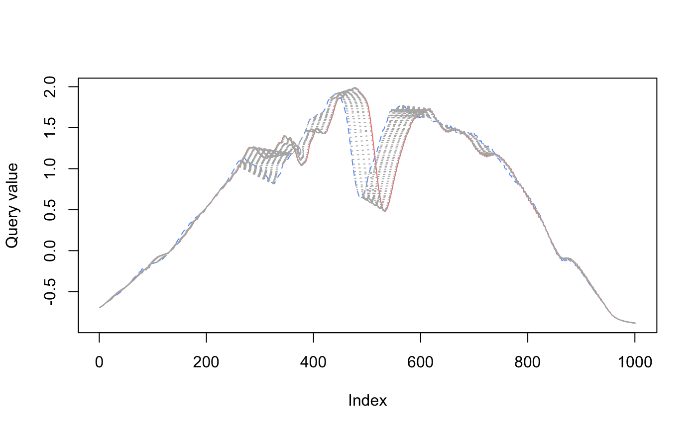

Introduction
Working with a set of time series measuring related observations requires a different set of tools compared to analyzing or forecasting a single time series.
If you want to cluster time series into groups with similar behaviors, one option is feature extraction: statistical summaries that characterize some feature of the time series, such as min, max, or spectral density. The feasts R package and the Python package tsfresh provide tools to make this easier.
Why not cluster on the time series directly? Standard methods don’t work as well, and can produce clusters that fail to capture visual similarities in shape and size.
Dynamic time warping is method that aligns with intuitive notions of time series similarity. To show how it works, I’ll walk through
how standard distance metrics fail to create useful time series clusters
dynamic time warping distance as a method for similarity
Distance Metrics
library(tsrecipes) library(tidyverse) #> ── Attaching packages ─────────────────────────────────────────────────── tidyverse 1.2.1 ── #> ✓ ggplot2 3.3.2 ✓ purrr 0.3.4 #> ✓ tibble 3.0.3 ✓ dplyr 1.0.0 #> ✓ tidyr 1.1.0 ✓ stringr 1.4.0 #> ✓ readr 1.3.1 ✓ forcats 0.4.0 #> ── Conflicts ────────────────────────────────────────────────────── tidyverse_conflicts() ── #> x dplyr::filter() masks stats::filter() #> x dplyr::lag() masks stats::lag() library(dtwclust) #> Loading required package: proxy #> #> Attaching package: 'proxy' #> The following objects are masked from 'package:stats': #> #> as.dist, dist #> The following object is masked from 'package:base': #> #> as.matrix #> Loading required package: dtw #> Loaded dtw v1.21-3. See ?dtw for help, citation("dtw") for use in publication. #> dtwclust: #> Setting random number generator to L'Ecuyer-CMRG (see RNGkind()). #> To read the included vignettes type: browseVignettes("dtwclust"). #> See news(package = "dtwclust") after package updates. library(patchwork) library(recipes) #> #> Attaching package: 'recipes' #> The following object is masked from 'package:stringr': #> #> fixed #> The following object is masked from 'package:stats': #> #> step
To cluster, we need to measure the distance between every member of the group.1 Typically we think of Euclidean distance: the length of a straight line between two points.
This distance pops up all the time in data science, usually in Mean Squared Error (MSE) or it’s counterpart Root Mean Squared Error (RMSE). These metrics are used to measure regression error in machine learning and assess the accuracy of a time series forecast.
#> ── Attaching packages ────────────────────────────────────────────────────────── fpp3 0.3 ──
#> ✓ lubridate 1.7.9 ✓ feasts 0.1.4
#> ✓ tsibble 0.9.2 ✓ fable 0.1.1.9000
#> ✓ tsibbledata 0.2.0
#> ── Conflicts ───────────────────────────────────────────────────────────── fpp3_conflicts ──
#> x lubridate::date() masks base::date()
#> x dplyr::filter() masks stats::filter()
#> x tsibble::interval() masks lubridate::interval()
#> x dplyr::lag() masks stats::lag()
#> Plot variable not specified, automatically selected `.vars = Beer`
To evaluate the fit of the forecast to the actual data, you can calculate the Euclidean distance between the corresponding points in the time series and the forecasts. The smaller the distance, the better the forecast: the more similar the two series are.
A straight line between two points isn’t always the possible. In a city grid, we are constrained by the blocks. In this situation, the distance between two points is called the Manhattan distance.

Time series also need a special distance metric. The most common is called Dynamic Time Warping.
Time Series Distance
Plotted below are three time series. I’ve plotted blue and green to both overlap red. Is blue or green more similar to red?
eth_sample <- ethanol %>% filter(id %in% c(1, 2, 53)) eth_sample_unnested_trunc <- eth_sample %>% mutate(n = list(1:1751)) %>% unnest(c(ts, n)) %>% filter(between(n, 500, 1500)) eth_sample_trunc <- eth_sample_unnested_trunc %>% select(-n) %>% group_by(id, class) %>% summarise(ts = list(ts), .groups = "drop")
plot_overlap <- function(ids, x) { group_colors <- c(`1` = "#F8766D", `2` = "#619CFF") if (any(ids != c(1, 2))) { group_colors <- c(`1` = "#F8766D", `53` = "#00BA38") } x %>% filter(id %in% ids) %>% ggplot(aes(n, ts, color = as.factor(id), group = id)) + geom_line(show.legend = FALSE) + scale_color_manual(values = group_colors) + labs(x = NULL, y = NULL) } plots <- list(c(1, 2), c(1, 53)) %>% map(plot_overlap, eth_sample_unnested_trunc) plots[[1]] / plots[[2]]

I think it’s blue: blue and red both has an early dip after 750. Around 1000 they both have a slim, deep trough. The major difference is that blue seems shifted to the left.
Green is all wrong: where red dips around 750, green has a bump. And the dip after 1000 is wider and shallower.
The Euclidean distance tells a different story. Red is actually closer to green, because it has a smaller distance metric (9.78 vs 9.83).
eth_sample$ts %>% set_names(c("red", "blue", "green")) %>% simplify2array() %>% t() %>% dist() #> red blue #> blue 9.83149 #> green 9.78531 9.82103
Dynamic Time Warping
To capture our intuition about the similarity of red and blue, we need a new metric. This metric can’t simply measure the point-to-point distance between the series. As we saw, blue is shifted to the left of red, even though the shape is really similar. We need to warp time to account for this shift!
In the visualizations below2, you can see how dynamic time warping stretches (warps) time to match up nearby points.
plot_dtw <- function(ts1, ts2, ...) { dtw::dtw(ts1, ts2) %>% dtw::dtwPlotTwoWay(xts = ts1, yts = ts2, ...) } plot_dtw( eth_sample_trunc$ts[[1]], eth_sample_trunc$ts[[2]], col = c("#F8766D", "#619CFF") )

When comparing red to green below, there is a lot more warping going on to match up points (as measured by the light gray concentric lines between the series), so the time series are more dissimilar.
plot_dtw( eth_sample_trunc$ts[[1]], eth_sample_trunc$ts[[3]], col = c("#F8766D", "#00BA38") )

The dissimilarity between red and green is reflected when we calculate the dynamic time warping distance.
eth_sample$ts %>% set_names(c("red", "blue", "green")) %>% simplify2array() %>% t() %>% dist(method = "DTW") #> red blue #> blue 28.26073 #> green 33.82476 31.50148
The UC Business Analytics R Programming Guide has an excellent series on clustering, covering dissimilarity measures to the final clustering algorithms.↩︎
https://www.r-bloggers.com/time-series-matching-with-dynamic-time-warping/↩︎